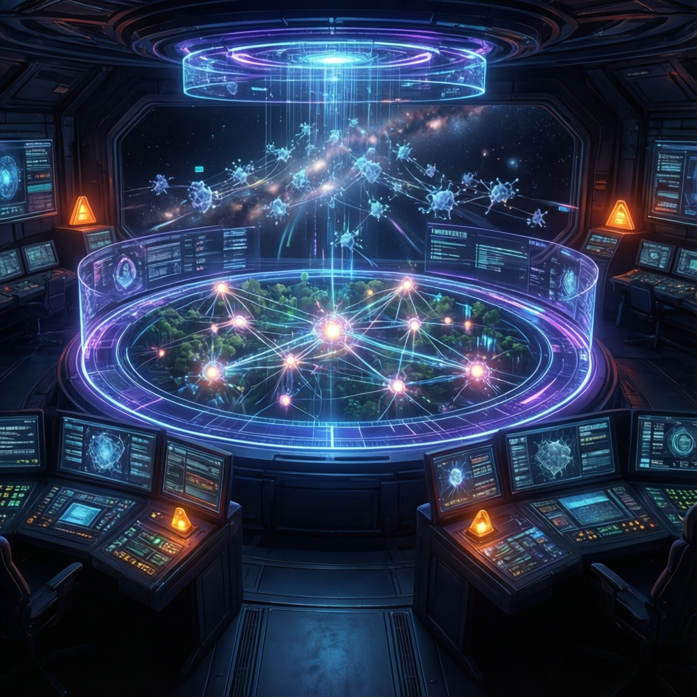

開源 AI 代理指揮中心｜零程式碼、零費用｜將 AI 變成會為你工作的員工

開源 AI 代理平臺 Hermes 推出全新「Agent Workspace」工作空間，將傳統終端機操作轉化為視覺化指揮中心。使用者只需複製貼上單一指令，無需程式設計經驗，即可在本地端啟動完整 AI 工作環境，整合記憶功能、即時儀錶板、任務排程及多代理協作。
這個工俱的核心理念是：把 AI 從「計算機」變成「自動駕駛系統」——不再是輸入問題、獲取答案、任務結束，而是自主規劃、執行、交付並歸檔記憶。
報告揭示五層系統用於構建 AI 自動化工作流：
多數人使用 AI 如同「用法拉利去便利店」——輸入問題、拿答案、結束。Hermes Workspace 的設計哲學是：給 AI 記憶、工俱、技能和執行真實任務的能力，讓它成為會為你工作的員工，而非只回答問題的工俱。
報告展示完全由 AI 代理在 Hermes Workspace 內完成的網站建置案例——架構設計、內容生成、格式編排、FAQ 建置，全程本地端執行，品質超越多數人類能做的水準。這證明「AI 不能做真實工作」的迷思可以被打破。
單一指令完成安裝，10 分鐘啟動，60 歲非技術用戶亦成功即時部署。
「Hermes World」讓你觀察 AI 代理的即時互動與任務執行狀態，大幅提升系統透明度。
同時運行 17+ 代理，研究、撰寫、編輯、發布形成流水線，使用者從操作者變架構師。
整合 Obsidian + OME，讓 AI 深度理解你的業務脈絡，出質量逼近人類專業。
無縫銜接 HyperFrames、HeyGen 等工俱，支援本地模型 Ollama 及免費 API。
| 維度 | 傳統 AI 使用 | Hermes Workspace |
|---|---|---|
| 使用模式 | 輸入問題 → 獲取答案 → 結束 | 自主規劃 → 執行 → 交付 → 歸檔 |
| 介面 | 命令列終端機，無視覺化管理 | 網頁化視覺化介面，3D 虛擬世界 |
| 記憶能力 | 無狀態，每次對話從頭開始 | 商業情境記憶，整合 Obsidian |
| 任務執行 | 單一任務響應 | 多代理協作，Swarm 並行模式 |
| 成本 | 依賴付費 API | 開源免費，支援本地模型 |
| 學習曲線 | 需要技術背景 | 零技術背景，10 分鐘上手 |
「當你給 AI 正確的系統，它產出的成果通常比人類更好。每小時學習 Hermes 節省你每週 10 小時——而我知道你很忙，每天節省 2 小時，一年就是 720 小時。」
— 影片創作者複製貼上單一指令到終端機，完成 Hermes Workspace 安裝。
設置本地模型（Ollama）或免費 API（OpenRouter Alpha），開始使用。
整合 Obsidian + OME，讓 AI 深度理解你的業務脈絡。
識別 5-10 項核心業務任務，對應配置 Hermes 技能堆疊。
設定 Conductor 任務，啟動多代理協作，從操作者變成架構師。
專傢預測，未來 12-18 個月內，類似的視覺化代理協作平臺將成為中小企業數位轉型的標配工俱。「提示工程師」角色將進一步演化為「AI 工作流架構師」——從設計工作流程而非親自執行任務的角度發揮價值。
隨著「代理經濟」時代來臨，Hermes Agent Workspace 代表開源社羣對商業自動化民主化的重要推進。初期學習投入約一小時，每日可節省兩小時工時，年化效益達 720 小時，投資報酬率顯著。